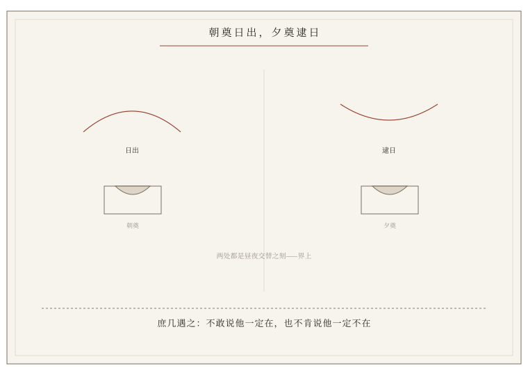

檀弓上 · 三·一百零八 · 第 311 课
朝奠日出，夕奠逮日。
说什么事：早晨的奠在日出时设，傍晚的奠在日落时设。
落在哪一层：奠之时。论「阴阳交接，庶几遇之」。
为何编在此位：上一课论备材之「豫」，是有计划的早；此课论一日两奠之「时」，是按天定的早与晚。
【经】朝奠日出，夕奠逮日。
【注】陰陽交接，庶幾遇之。
【疏】（底本此节无疏文。此条列于「既殡旬」之后、「父母之丧」之前，注止八字。）
朝奠 早晨之奠。未葬之时，每日朝夕各一奠于殡宫。
日出 太阳出时。此为朝奠之时。
夕奠 傍晚之奠。
逮日 至日落。逮，及、至。注疏皆以「逮日」为及日入之时。
阴阳交接 注语。日出为夜尽昼始、日落为昼尽夜始，皆阴阳交替之刻。
庶几 希望、差不多。庶几遇之，冀其相遇。
早晨的奠在日出时设，傍晚的奠在日落时设。
此节八个字，定的是一日两次供奠的时刻。
注四字：「阴阳交接，庶几遇之。」
这四字里有一层极柔软的东西。奠是给死者的，而死者在哪里，无人知道。礼便把供奠放在日出与日落——昼夜交替那两个时刻。注说：此时阴阳相接，或许他能碰上。
「庶几」二字，是不敢确定的确定：不敢说他一定在，也不肯说他一定不在。
注把时刻的选择说成了一种「守候」。这不是礼的制度设计，是礼的一种姿态：我不知道你在哪里，我就在你最可能经过的那两个门口等你，一天两次。
第一层 依天时，不依人意 一日两奠，不按饥饱，不按方便，按日出日落。礼在此把「供」的时间交了出去，交给天。人不必决定何时奠，天已经决定了。
这一层与 310「豫成」相反：那是人可以算的，这是人不该算的。礼很清楚哪些事该由人定，哪些事不该。
第二层 「交接」之刻的选择 为什么专取日出日落？注给了「阴阳交接」。这个说法在礼书中常见：昏、明、朔、望，皆交接之时。礼偏爱在这些「界上」行事——不是界内，是界上。
界上的意义：它同时属于两边，也同时不属于两边。生与死之间，也有这样一个界。把奠放在界上，是承认死者正在这条界上。
第三层 一日两次的分寸 既不是一次，也不是随时。两次：日出、日落。次数少而准时，比次数多而不准更有分量。礼的时间观，重在「不失时」，不在「多」。
此可与 302「有荐新，如朔奠」并读：荐新是「额外的、不定期的」，故须比照朔奠以定其重；朝夕奠是「常的、每日的」，故只须准时，不必加隆。
第四层 本节无疏 此节无疏，注八字。义在八字之内，无可再申。凡此类短章，读法当以注为主，不以推衍为主。
与今日何干 今人上供，多择便时。此节不改这个习惯，只提一处：若把供奠当作「守候」，则时刻本身就是内容；若只当作仪式，则何时都可。分别在于你信不信他会来。
| 左 | 右 |
|---|---|
| 朝奠 | 日出 |
| 夕奠 | 逮日 |
| 一日二次 | 常而不加 |
| 阴阳交接 | 界上 |
| 庶几 | 冀之之辞 |
| 遇之 | 冀其相遇 |
| 不失时 | 重在此 |
| 不依人意 | 依天时 |
画一处殡宫之外的院落，分左右两幅并置（中间以一道极淡的竖线分隔）。左幅：天边初升的日轮（只画半轮与数道光），院中一案，案上置一盂一豆，案旁立一人（背向观者、正俯身设器）。右幅：天边将落的日轮（半轮已沉，只余上缘），同样一案一盂一豆，案旁亦立一人。两幅的器物同形同数。不写文字、不画人面细节。赭色只用在两幅中那两只盂的边沿，与两轮日的边缘。
